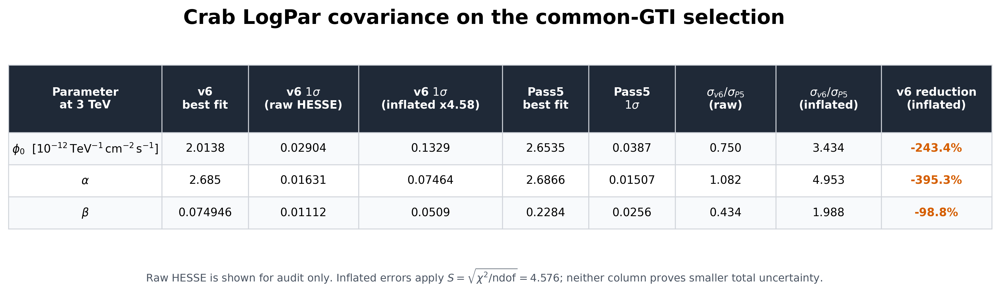
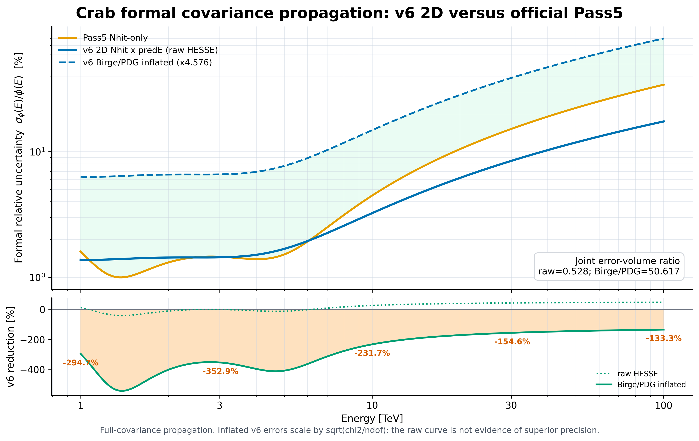
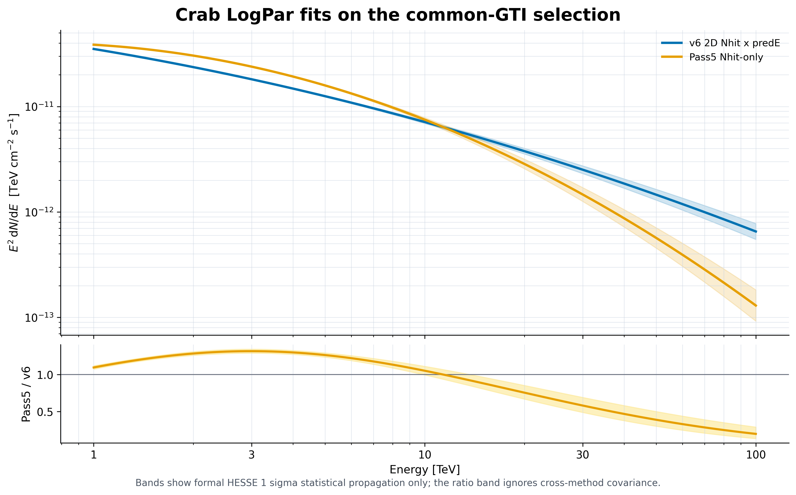
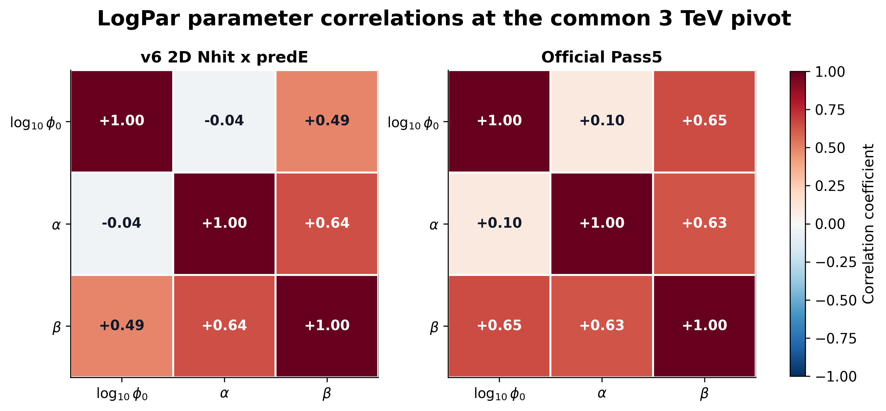

v6 与 official Pass5：Crab LogPar covariance 对比
样本审计通过：strict recovery 为 1078 total / 928 accepted / 150 rejected / 0 remaining；
accepted_maps.list 为 928 行且 928 个唯一 URI，与 EOS 上 928 个非空 J2000 ROOT 完全一致，merge 终态日志也记录 928 个输入。common_gti.tsv 的 4763 行 duration sum 与 manifest 一致。“相同时间样本”的限定：两套管线共享相同 accepted-hour/common-GTI 选择，但有效 live time 并非逐秒相同。差值为 4614.950 s（v6 的 0.04088%）。928 个 chunk 中 898 个在 ±0.2 s 内一致；14 个异常 chunk 贡献 99.69% 的总差值。Pass5 以官方事件流经 GTI mask 后的 DI 时间占用计算
EffLtime，v6 则累加 recovered-time GTI 连续端点；20 个 accepted hours 的 Pass5 mask histogram 为零。故可称“common-GTI 选择样本”，不可称严格相同有效曝光。共同参数空间：两套最终 covariance 均独立核验为 3×3、原矩阵对称、正定，且对角线平方根与各自参数误差一致；共同参数顺序为
log10_phi0 / alpha / beta，pivot 均为 3 TeV。参数误差

| 参数 | v6 值 | v6 σ raw | v6 σ Birge/PDG | Pass5 值 | Pass5 σ | v6 reduction raw | v6 reduction Birge/PDG |
|---|---|---|---|---|---|---|---|
| phi0_at_3tev | 2.0137784439390827e-12 | 2.903868308346598e-14 | 1.328923026699336e-13 | 2.6534909999999988e-12 | 3.87014093452818e-14 | +25.0% | -243.4% |
| alpha_at_3tev | 2.6849522884309387 | 0.016310736104079536 | 0.07464426926257277 | 2.6866 | 0.015071858104715476 | -8.2% | -395.3% |
| beta | 0.07494615683668662 | 0.011121518562605622 | 0.05089639246803837 | 0.2284 | 0.025601356374789927 | +56.6% | -98.8% |
v6 的 χ²/ndof = 20.943334，Birge/PDG 因子为 4.576389。联合误差体积比 sqrt(det C_v6 / det C_Pass5)：raw HESSE = 0.528；按该因子膨胀 v6 三维误差体积后 = 50.617。raw 数值 0.528 不能作为 v6 精度优于 Pass5 的证据。
能谱相对不确定度

使用 Var[ln φ(E)] = g(E)^T C g(E) 传播完整 covariance。raw 曲线仅复现形式 HESSE；虚线为 Birge/PDG 膨胀，二者都不包含系统误差。
最佳拟合能谱

参数相关性

能区、binning 与 objective 审计
| 项目 | v6 2D | official Pass5 |
|---|---|---|
| Nhit | 100≤Nhit<3000；7 个 Nhit 带，44 个选中 Nhit×predE cells | 30≤Nhit<2000；edges = 30/60/100/200/300/500/800/2000 |
| 能量坐标 | predE 选中包络 0.1–316.23 TeV；响应 true-E 0.1–1000 TeV；本报告传播 1–100 TeV | Nhit-only，无 event-level reconstructed-energy cut；7 个代表能量约 0.562–15.849 TeV |
| 目标函数 | 44 个 Stage-E excess cells 上的 conservative χ²，σ=√(N_on+B_on)，ndof=41 | 7-bin spatial cube 的 Poisson likelihood；HESSE 中共 7 个 free parameters（Crab 3 + nuisance norms） |
科学解释限制：这是完整管线比较，不是 predE 独立增益实验。除 predE 外，两侧的 Nhit 覆盖/edges、cell selection、背景、PSF/IRF、objective 与 nuisance 处理均不同。要隔离 predE 增益，必须在同一 v6 管线内固定这些选择，只切换 predE 维度。当前结果不能支持“v6 总精度已证明优于 Pass5”，也不能把 covariance 差异归因于 predE。
Pass5 provenance 限定：merged map → data config → data.root → covariance YAML 的 SHA256、live time 与时间戳顺序已记录；但
data_config.yaml 和 covariance_fit.yaml 仍内嵌已不存在的 common_gti_fit_interactive/ 路径，实际文件位于 common_gti_fit/。因此文件级 provenance 可审计，但路径元数据不是完全自洽闭环，原始 YAML 未被改写。